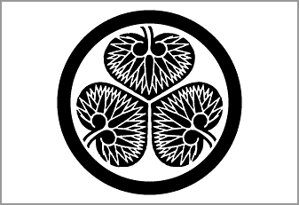

The Sano Ichirō Page
This site is devoted to the mystery fiction of Laura Joh Rowland, which describes the crime-solving exploits of Sano Ichirō during the Genrōku period in Tokugawa Japan (1688-1703). The graphic above is the Tokugawa family crest (three hollyhocks).
The Mysteries
(Get Copies of the Novels and the Historical References at Amazon)
The Rōnin's Mistress
The Cloud Pavilion
The Fire Kimono
The Snow Empress
Red Chrysanthemum
The Assassin's Touch
The Perfumed Sleeve
The Dragon King's Palace
The Pillowbook of Lady Wisteria
Black Lotus
The Samurai's Wife
The Concubine's Tatoo
The Way of the Traitor
Bundori
Shinjū
The Setting
Timeline of the Novels.
Info on Tokugawa Japan and the 47 Ronin.
Map of Provinces of Old Japan
Info on Edo and an Interactive Map of Edo.
The Zōjō Temple now and then.
A gold koban coin from the Tokugawa period.
The Main Characters
Sano Ichirō, the Shogun's Most Honorable Investigator of Events, Situations, and People (and later Grand Chamberlin): 30 at beginning of series, the son of a rōnin martial arts instructor, tutor and history scholar. Gets a position as senior policie commander (yoriki) when his father calls in a debt owed to his great grandfather by the family of of a high treasury official, Katsuragawa Shundai.
Ueda Reiko, Sano's wife: 20 at beginning of series, daughter of a magistrate, one of the most powerful and wealthy men in Edo. Her mother died when she was very young, and her father brought her up more like a boy than a girl, so she is skilled in martial arts and legal questions.
Tokugawa Tsunayoshi, Shogun 1680-1709. A real historical figure, famous for his edicts protecting dogs.
Yanagisawa Yoshiyasu: Grand Chamberlin, 1688-1709: A real historical figure.
Keishōin, the shogun's influential and devoutly Buddhist mother. A real historical figure.
Hirata, Sano's Chief Retainer: Starts out as a police officer (doshin) in Bundori and becomes Sano's chief assistant (and eventually Shogun's Most Honorable Investigator) .
Midori, Hirata's Wife: Daughter of Lord Niu in Shinjū, banished to nunnery but rescued by Sano and becomes part of Shogun's establishment.
Dr. Ito Genboku: Forensic scientist confined to Edo Jail morgue because of his interest in "foreign, Dutch" science.
Some Historical References
Politics in the Tokugawa Bakufu, 1600-1843, Conrad D. Totman, University of California Press, 1967
Tokugawa Japan, Edited by Chie Nakane and Shinzaburo Oshi, University of Tokyo Press, 1990